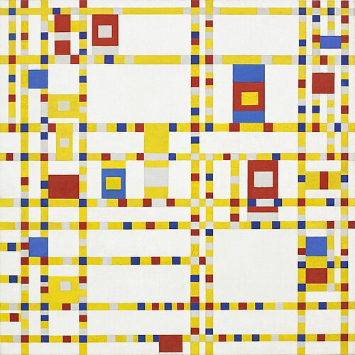

My favorite story is probably Nate the Snake, but if I gave you a summary it would spoil the ending. Suffice to say it, involves a snake named Nate being found in the desert by a desparate man.
Nate the Snake.
One of my favorite memories was on a golf fieldtrip for PE. It started raining halfway through, so I ended up telling the story the best I could from memory. It must have taken half an hour to an hour. But the pay off was worth it.
One of my favorite images is Broadway Boogie Woogie by Piet Mondrian. I really like the idea of representing something in the simplest possible way.

Go to Home Page
Contact Us